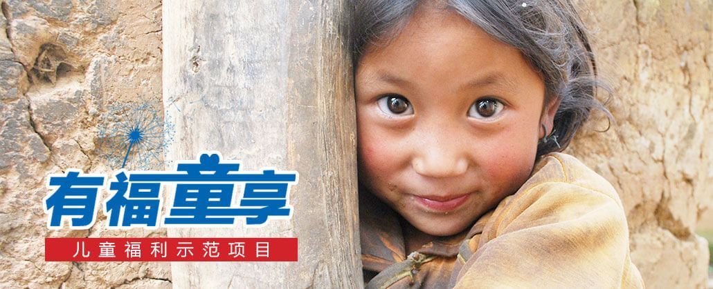
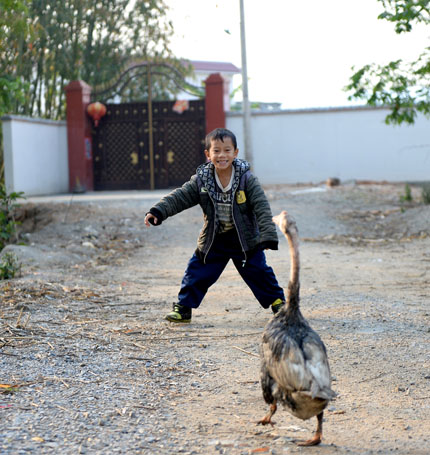
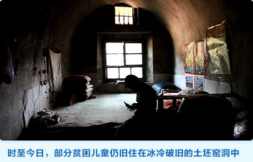
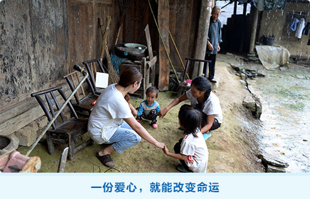
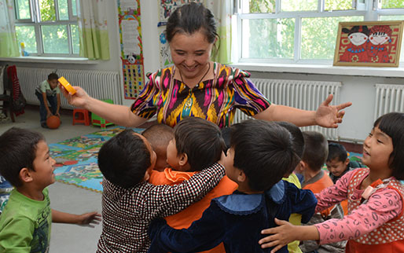
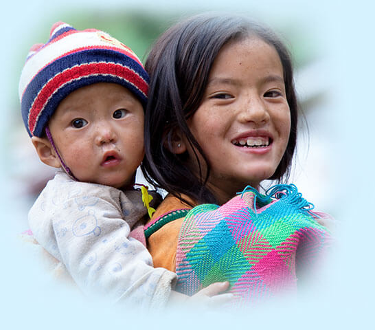
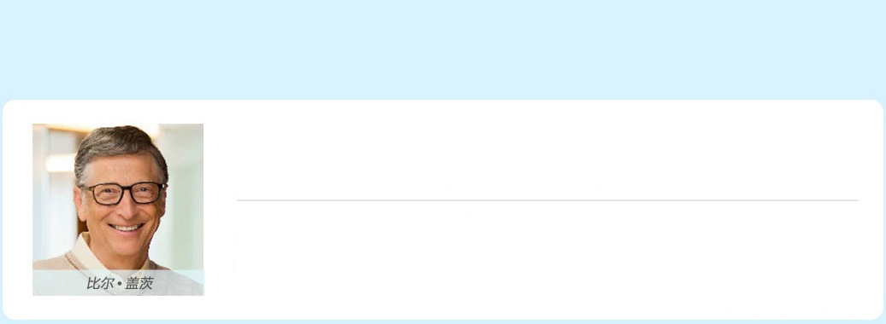
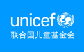

一份爱心就能改变命运

“村里人以前劝我把孩子丢了，”爸爸说：“看着孩子一闪一闪的眼睛，就不能丢。”
管愿(化名)出生时患尿道破裂，村里人说这孩子不男不女是“双性人”，缅甸嫁过来的妈妈实在忍不下去了，孩子1岁时离家改嫁了他人。
在外面玩的管愿，不管跑多远都要回家上厕所，怕被其他孩子看到。村儿童福利主任万燕花来了解情况，奶奶拉管愿过来一把脱下裤子。“不要这样做，孩子有心理阴影。”万燕花劝说到。
后来儿童福利项目专家帮助管愿联系了东莞的医院免费做手术。家里没有路费钱，万燕花向民政局申请预支了医疗救助费用。爸爸不识字，万燕花就找人陪父子俩一起去了东莞。 爸爸感激地说：“要不是福利主任，真的做不了这个手术。”
出过远门的小管愿学会了普通话，人也更加开朗，他告诉我们长大后想要开飞机。更重要的是，他终于成为了不怕和其他男孩在一起上厕所的小小男子汉。
管愿(化名)出生时患尿道破裂，村里人说这孩子不男不女是“双性人”，缅甸嫁过来的妈妈实在忍不下去了，孩子1岁时离家改嫁了他人。
在外面玩的管愿，不管跑多远都要回家上厕所，怕被其他孩子看到。村儿童福利主任万燕花来了解情况，奶奶拉管愿过来一把脱下裤子。“不要这样做，孩子有心理阴影。”万燕花劝说到。
后来儿童福利项目专家帮助管愿联系了东莞的医院免费做手术。家里没有路费钱，万燕花向民政局申请预支了医疗救助费用。爸爸不识字，万燕花就找人陪父子俩一起去了东莞。 爸爸感激地说：“要不是福利主任，真的做不了这个手术。”
出过远门的小管愿学会了普通话，人也更加开朗，他告诉我们长大后想要开飞机。更重要的是，他终于成为了不怕和其他男孩在一起上厕所的小小男子汉。
行进路上，我们一直在努力


在中国，由于儿童福利制度尚未完善，还有数以千万计需要救助的贫困儿童。每年也还有新的脆弱儿童因家庭变故而陷入困境，他们有的甚至吃不饱饭、无人照顾。儿童福利示范项目为每个村设立了儿童福利主任，由他来了解掌握每个困境儿童的情况，为儿童及其家庭提供急需的福利支持，从而建立起深入村级、综合全面的儿童社会福利体系。
我们的行动
儿童福利示范项目覆盖了河南、四川、山西、新疆和云南中西部五个省份的120个村，为贫困地区孩子的生活带来了明显改善，受益儿童超过8万名。仅2013年6月至2014年6月，村儿童福利主任为：

-
4084
- 名儿童
- 申请到教育补贴
-
2456
- 名特困生
- 申请到最低生活保障
-
685
- 名病残儿童
- 申请到补助或辅助设备
-
1680
- 名儿童
- 申请到孤儿津贴
儿童福利体系建设，任重道远，我们需要您的
继续支持

- • 仍有困境儿童需要别人帮助补齐多种证明才能有户口；
- • 需要别人帮助完成各种申请手续才能享受低保和其他福利；
- • 需要多一份关注才能过得像正常孩子，需要更多的治疗才能康复；
- • 那些被劝说回到学校上课的孩子仍旧会因为多种原因而再次辍学；
- • 单亲家庭的孩子可能会因为父母再婚而被遗弃；
- • 孤儿们可能会因为生病而陷入困境；
- • 孩子每月的补助可能被监护人滥用…

People ask us all the time how they can help-we are always proud
to recommend making a donation to @UNICEF...
总有人问我们，他们能做什么贡献呢？我总会满怀信心的建议他们，
支持联合国儿童基金会吧……
摘自本人Facebook
关于我们
联合国儿童基金会(UNICEF)，是致力于保护和促进儿童权益的联合国机构。我们接受严格的国际财务监控和内外审计，我们所有资金都来自于自愿捐赠，其中包括像您这样的个人捐赠者。
2016年，我们把驻华办事处可支配资金中的90%，都用于在中国开展各项儿童援助行动。在中国我们提供无偿援助，帮助困境儿童获得卫生保健、清洁饮用水以及高质量的教育，保护他们免受虐待、剥削、灾难和疾病的侵害。
订阅我们的邮件，了解我们的援助工作取得的最新进展:
邮箱：
2016年，我们把驻华办事处可支配资金中的90%，都用于在中国开展各项儿童援助行动。在中国我们提供无偿援助，帮助困境儿童获得卫生保健、清洁饮用水以及高质量的教育，保护他们免受虐待、剥削、灾难和疾病的侵害。
订阅我们的邮件，了解我们的援助工作取得的最新进展:
邮箱：

联合国儿童基金会的网站已受全球知名的专业安全证书Symantec认证(以前称Verisign)，您在本网站提交的个人信息将被高强度加密和传输，确保信息安全。